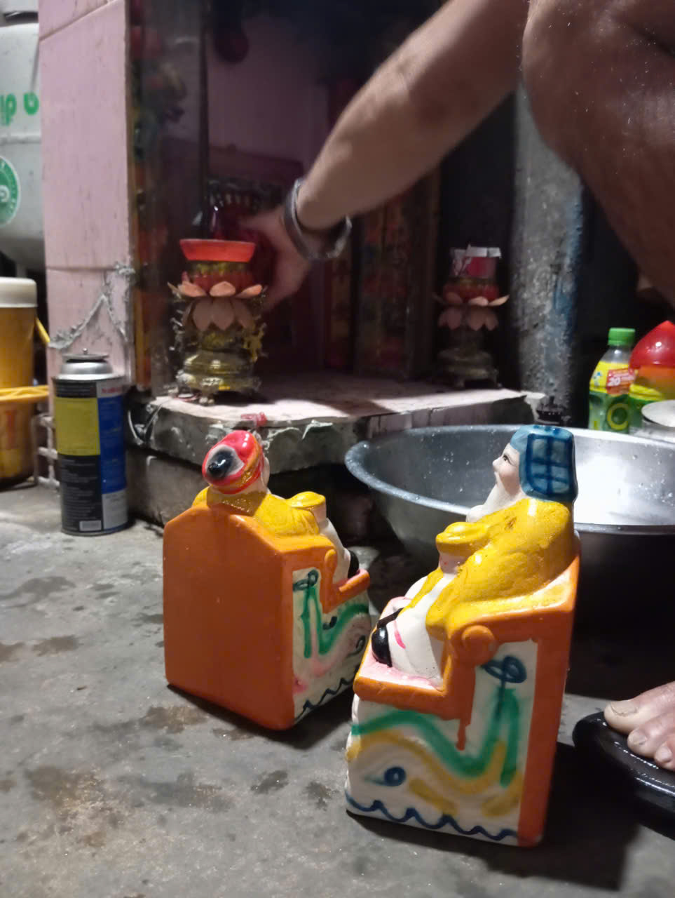
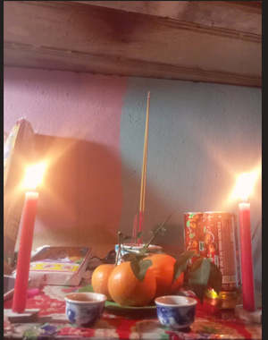
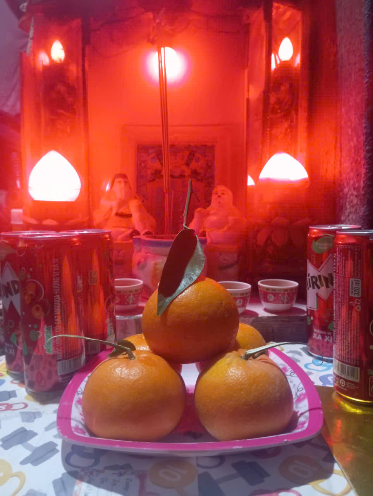
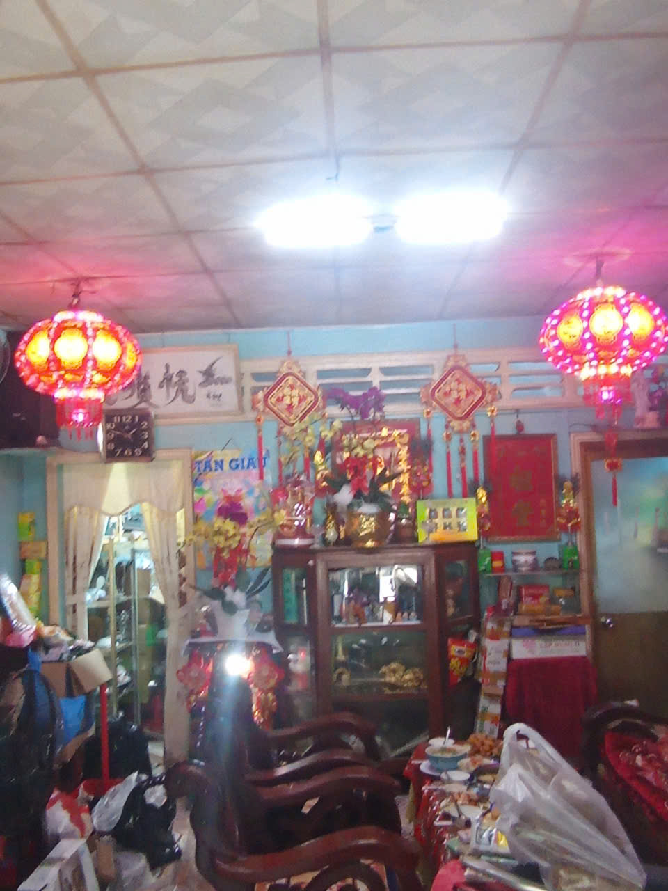
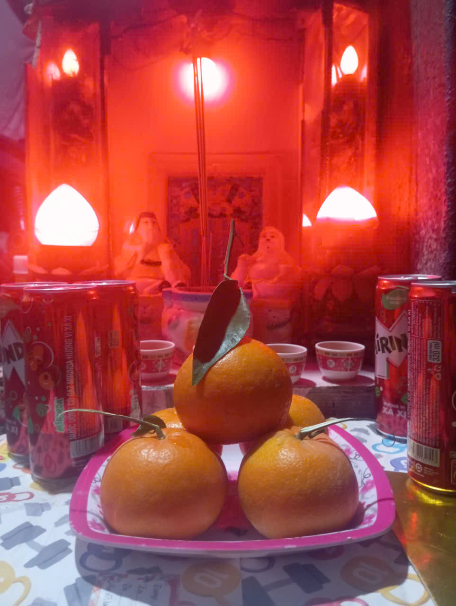
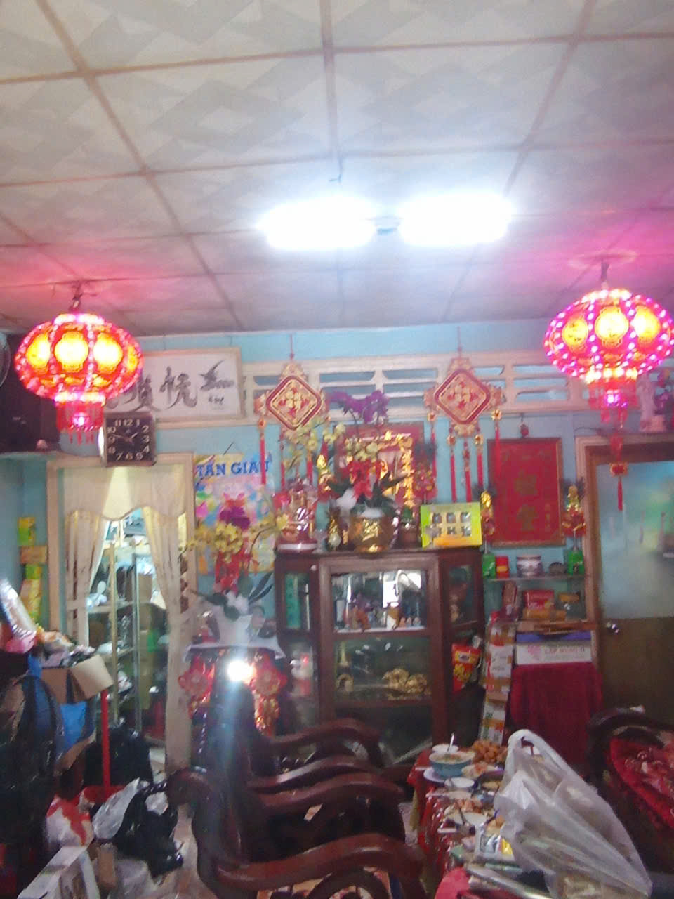
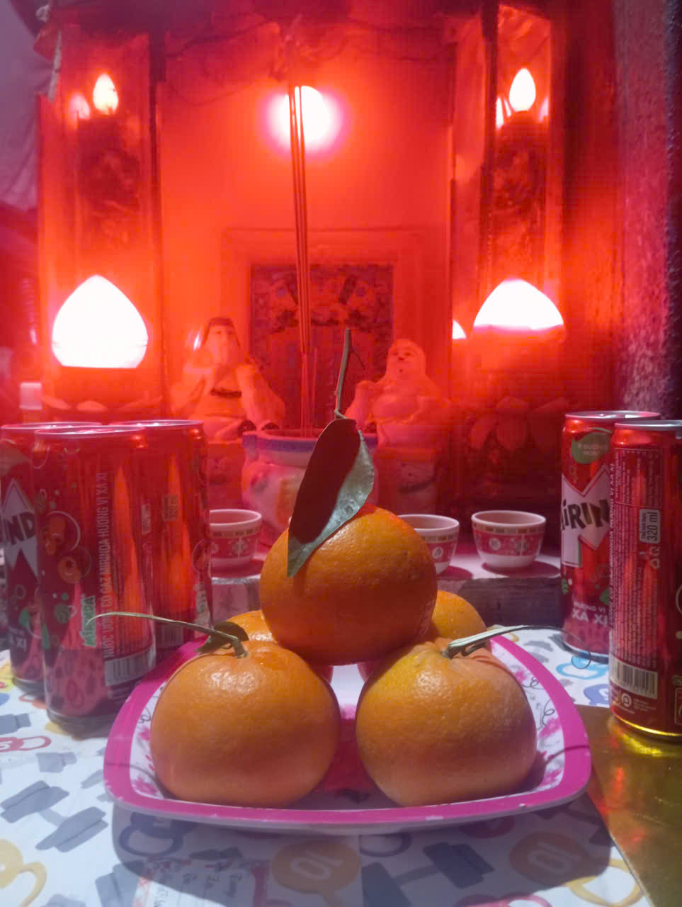
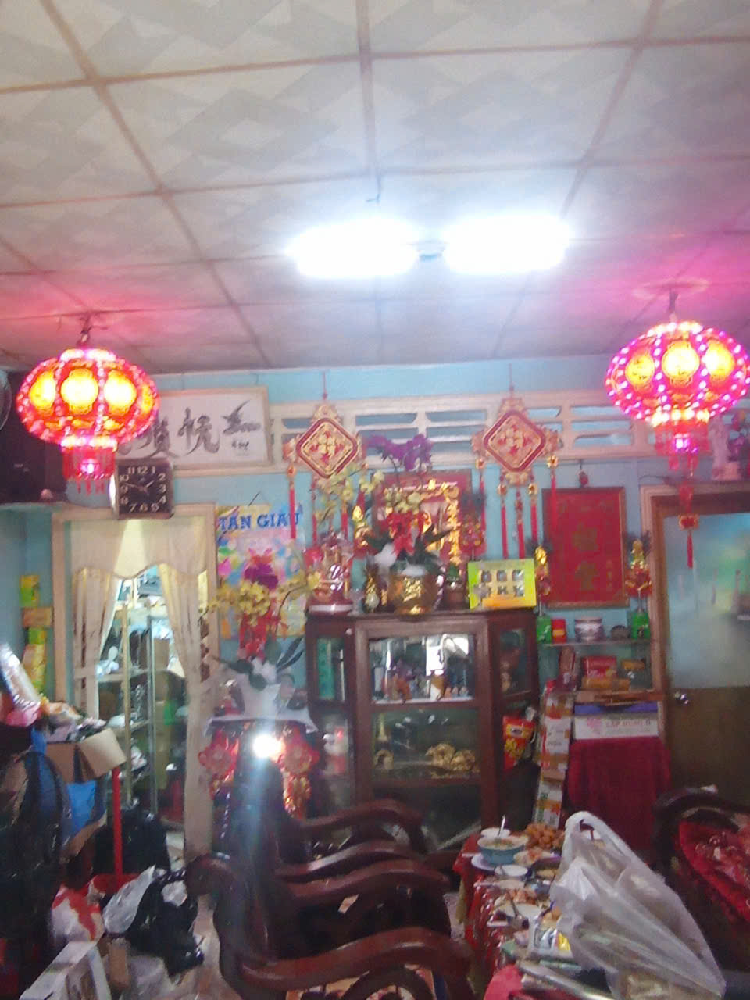

Tết, là thời điểm ta đón năm mới, và tạm biệt năm củ, chính vì vây
nên việc dọn dẹp nhà cửa là một trong những điều cơ bản nhất phải làm
mỗi năm, để xua đi những điều không may măn của năm củ và đón chào vận
may cho năm mới, gia đình, từ anh chị em, đến cha mẹ đều phải tụ lại
giúp đỡ nhau dọn dẹp nhà cửa, rửa lại thần tài, ông, bà Táo,...
Đây là một trong nhưng điều không thể không làm để đón chào một năm mới yên
bình, thuận lợi, bởi bản thân việc gia đình tụ họp lại để giúp nhau dọn
nhà cửa, đã mang rất nhiều ý nghĩa.
Chính vì vậy, trước ngày Tết, người trong gia đình em, và những người dân khác
tại quê em, cũng đều bắt đầu dọn dẹp, tân trang nhà cửa.

🔥 Cúng ông Táo, ông Công
Ngày 23 tháng Chạp, người Việt làm lễ tiễn ông Táo về trời
để báo cáo những việc trong năm với Ngọc Hoàng. Đây cũng là một phần
không thể thiếu và là một trong những truyền thống lâu dài của nước
Việt Nam ta và tất nhiên quê em cũng thế, phong tục đưa ông Táo về
trời không chỉ là một nghi thức truyền thống mà còn mang ý nghĩa sâu
sắc trong đời sống tâm linh và văn hóa của người Việt, điều
coi là những vị thần bảo hộ cho gia đình, giữ gìn bếp lửa ấm áp, tượng
trưng cho sự no đủ, hòa thuận và hạnh phúc. Và cũng như bao hộ gia đình
khác, gia đình em cũng cúng ông Táo với mong muốn mang lại
sự hạnh phúc, yên bình, cho cả gia đình.
Khác với nhiều nơi khác tại Sóc Trăng hay cả Việt Nam, quê em chỉ cúng ông Táo,
thậm chí khi được hỏi một số người cũng không biết về ông Công.
🎉 Trong Tết
🌙 Cúng ngày giao thừa
Lễ cúng giao thừa diễn ra vào thời khắc chuyển giao giữa năm cũ và năm mới,
mang ý nghĩa cầu mong bình an và may mắn, xua đuổi và loại đi vận xui của năm củ,
là một nghi lễ lâu đời trong truyền thống văn hóa nước Việt ta, trong nghi lễ,
theo đúng truyền thống, người dân thường phải cúng ngoài trời trước rồi sau đó mới
cúng trong nhà. Trong gia đình em việc cúng giao thừa trong gia đình em bao gồm việc
cúng ông Táo, mẹ Sanh, mẹ Độ, và cuối cùng là ông thần tài thổ địa, đây cũng là một
điểm khác biệt nữa của quê em, đối với gia đình em việc cúng giao thừa là bắt buộc như
bao gia đình khác, nhưng bản thân việc cúng đối với gia đình em rất đơn sơ, chỉ một vài
loại trái cây, nước ngọt, đôi lúc sẽ có thêm mâm này, mâm kia.



🧧 Chúc Tết – lì xì
Chúc Tết và lì xì là phong tục truyền thống tốt đẹp của người Việt, diễn ra từ sáng
mùng 1 để gửi gắm mong ước may mắn, sức khỏe và tài lộc cho năm mới, vào ngày này,
những đứa trẻ trong xóm em sẽ bắt đầu đi đến nhà ngoại hoặc nội để gặp mặt những họ
hàng, người thân, những người sống xa nhà, xa quê đã trở lại để thăm quê, và khi đã
gặp họ, những đứa trẻ sẽ đưa ra những lời chúc phúc đến họ và tất nhiên là đến cả những
người hàng xóm, bạn bè, người quen xung quanh. Đáng tiếc, năm nay ít con cháu trong gia
đình em về nên không có ai để lì xì và việc nhận lì xì cũng chỉ nhận qua tay.
ảnh chúc Tết - lì xì.
🎊 Sau Tết
🕯️ Hóa vàng
Lễ hóa vàng, diễn ra sau những ngày đi Đình, nhằm tiễn ông bà tổ tiên đã qua đời
về cõi âm, kết thúc những ngày Tết sum họp gia đình, là một ngày lễ quan trọng trong
truyền thống Việt Nam ta, là ngày để ta bày tỏ lòng biết ơn với ông, bà, tổ tiên của
ta.
Ở quê em, lễ hóa vàng được tổ chức cùng với ý nghĩa tương tự, vào ngày này con cháu
của ông bà, và cả em sẽ cúng bái đưa tiễn ông bà, tổ tiên rời đi, chỉ có một điểm khác
biệt với những nơi khác, gia đình em thường không có bài cúng ngày lễ hóa vàng.
Sau khi hoàn thành việc đốt giấy.
🏯 Đi đình
Đình, là một trong những ngày lễ quan trọng nhất Tết, thường diễn ra trong 3 - 4
ngày liền vào ngày này, mọi người đều sẽ đến Đình để dạo chơi, ăn hàng, mua sắm, gia đình
hoặc các cặp đôi, bạn bè sẽ rủ nhau đi chơi, nhưng quan trọng nhất là để đến cúng Đình,
thắp hương, cầu may, trước khi Đình bắt đầu, ở quê em thường tổ chức "đón thần về Đình "...
Không may thay, Đình ở quê em diễn ra vào đêm mùng 13(1/3) nên em không có thời gian để quay clip.
Ảnh tạm.
🎁 Ý nghĩa phong tục ngày Tết 🧹
Ý nghĩa
Ngày Tết Nguyên Đán là dịp lễ quan trọng nhất trong năm của người Việt, mang nhiều ý nghĩa phong tục và
giá trị tinh thần sâu sắc. Đây là thời khắc chuyển giao giữa năm cũ và năm mới, tượng trưng cho sự khởi
đầu, niềm hy vọng và ước vọng về những điều tốt đẹp. Trong những ngày Tết, các gia đình thường quây quần
bên nhau, cùng nhau dọn dẹp, trang trí nhà cửa, gói bánh chưng, bánh tét, cúng ông Công ông Táo, thắp hương
tổ tiên để tưởng nhớ nguồn cội. Ngoài ra, phong tục chúc Tết, mừng tuổi, đi lễ chùa, tảo mộ cũng thể hiện
sự gắn kết cộng đồng, lòng hiếu thảo và mong cầu bình an, may mắn cho cả năm. Tết không chỉ là dịp nghỉ
ngơi, vui chơi mà còn là nét đẹp văn hóa, nhắc nhở mỗi người về tình thân, truyền thống và sự sum vầy.


 


